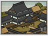

Requires
- Buildings:

Enables
- Buildings: 
Basic Building Statistics (can be modified by difficulty level, arts, skills, traits and retainers)
- Cost: 1200
- +1 happiness
- +5% bonus to tax rate in this province
- +2 rank(s) for metsuke recruited in this province
Clan Effects
- Improves the rate at which all arts are mastered: +10%
Description
The fool looks; the educated man sees; the wise man understands.
The people of this province are noted for their cultural and intellectual attainments. Their skills may be developed along one of two paths: firstly, they can be encouraged to contemplate and develop the many arts and techniques a clan needs to stay ahead of their rivals. Secondly, their skills can be used for the more prosaic business of espionage and counter-espionage. In this case, the quality of metsuke training will be markedly improved. The Chinese philosophy of Confucianism sees education as a good thing, and this idea percolated across to Japan. A samurai was expected to embody the idea of "pen and sword in accord" and be equally able with his katana or a calligraphy brush. Clear and clever thinking was a good thing, whether in peace or war. Learning was worthy in itself, and improved a man. There was also a sense that cultured men made better, more civilized rulers and administrators, and could deal with the lower social orders in a more just and equitable fashion. Of course, the practical day-to-day administration of a daimyo's territory required a large number of literate, intelligent agents and ministers.